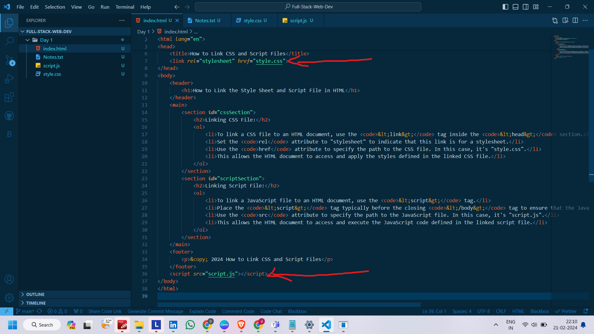

How to Link the Style Sheet and Script File in HTML
Linking CSS File:
- To link a CSS file to an HTML document, use the
<link> tag inside the <head> section.
- Set the
rel attribute to "stylesheet" to indicate that this link is for a stylesheet.
- Use the
href attribute to specify the path to the CSS file. In this case, it's "style.css".
- This allows the HTML document to access and apply the styles defined in the linked CSS file.
Linking Script File:
- To link a JavaScript file to an HTML document, use the
<script> tag.
- Place the
<script> tag typically before the closing </body> tag to ensure that the JavaScript code is loaded after the HTML content.
- Use the
src attribute to specify the path to the JavaScript file. In this case, it's "script.js".
- This allows the HTML document to access and execute the JavaScript code defined in the linked script file.
